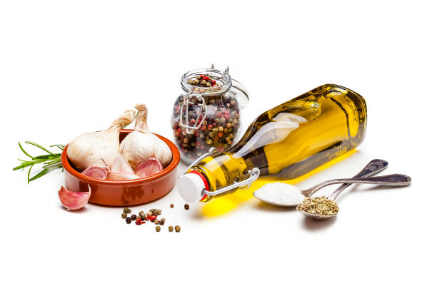
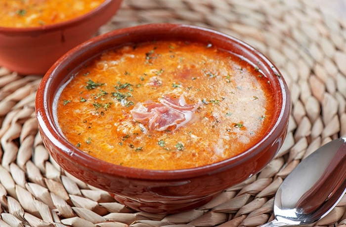

Sopa de Ajo

Ingredientes:
- 8 dientes de ajo
- 150 g de pan duro (preferiblemente del día anterior)
- 1 litro de caldo de pollo
- 4 huevos
- 100 g de jamón serrano en taquitos
- 1 cucharada de pimentón dulce
- Aceite de oliva
- Sal y pimienta
Preparación:
- Preparar los ingredientes: Pela los dientes de ajo y córtalos en láminas finas. Corta el pan en rebanadas finas o en trozos pequeños.

Creador de la página web: Martín Veiga Álvarez